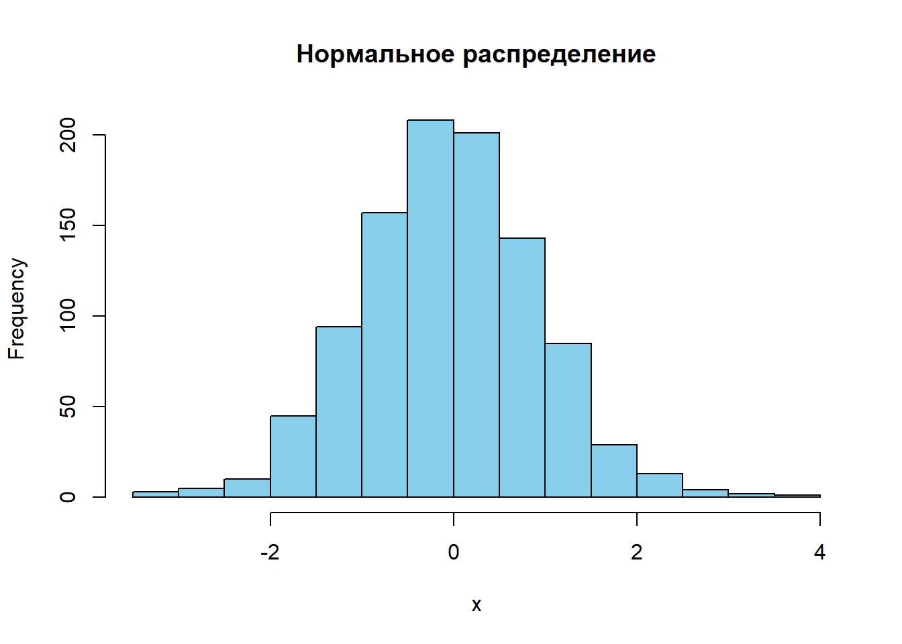
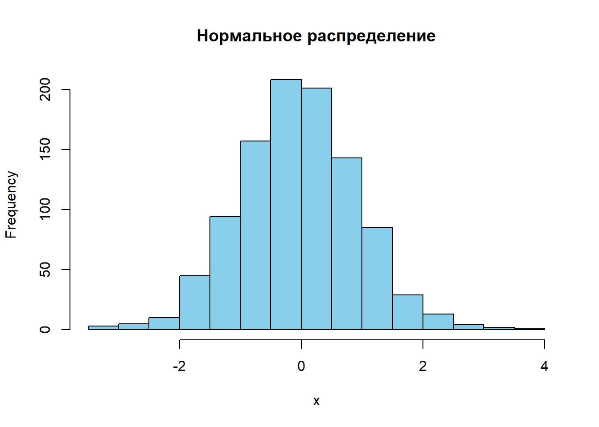
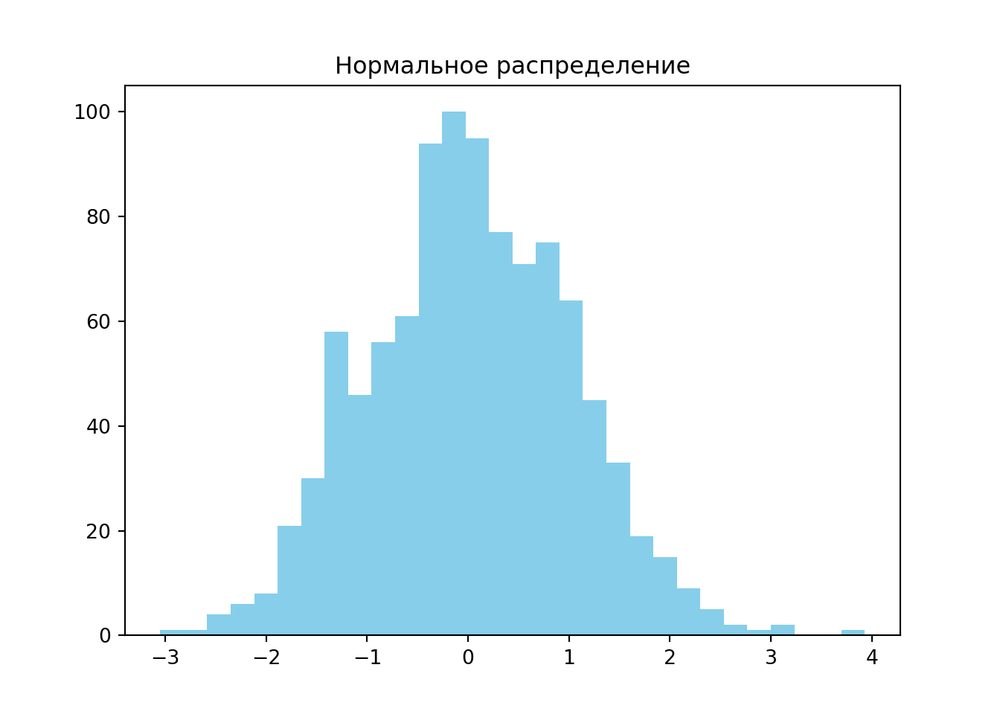

Code
# Пример R-кода
x <- rnorm(1000)
hist(x, col = "skyblue", main = "Нормальное распределение")
Курс «Количественные финансы» направлен на развитие практических навыков анализа данных и построения моделей с использованием реальных финансовых данных. Он рассчитан на студентов, стремящихся не только понять теоретические основы, но и научиться применять количественные методы в реальных задачах: от оценки рыночного риска до анализа финансовой отчетности и построения инвестиционных стратегий.
Автор курса — Марсель Салихов, директор Института энергетики и финансов, преподаватель ВШЭ с 2008 года. Более 20 лет опыта в аналитике, консалтинге и прикладных исследованиях. Работает на стыке макроэкономики, финансовых рынков и энергетической политики. Пишет на R с 2012 года и на Python с 2017 года.
📎 Профиль на сайте ВШЭ
📎 Сайт Института энергетики и финансов
Финансовая грамотность важна не только для профессионалов, но и для всех, кто принимает решения о сбережениях, инвестициях и страховании. Финансовая система — неотъемлемая часть современной экономики, а умение интерпретировать и анализировать данные даёт конкурентное преимущество в любой отрасли.
# Пример R-кода
x <- rnorm(1000)
hist(x, col = "skyblue", main = "Нормальное распределение")
# Пример Python-кода
import numpy as np
import matplotlib.pyplot as plt
x = np.random.normal(size=1000)
plt.hist(x, bins=30, color="skyblue")
plt.title("Нормальное распределение")
plt.show()
Excel остаётся важным инструментом для оперативного анализа и построения простых моделей. Однако:
R и Python лучше подходят для:
| Критерий | Python | R |
|---|---|---|
| Универсальность | +++ (общий язык программирования) | ++ (ориентирован на статистику) |
| Гибкость/оптимизация | ++ | ++ |
| Визуализация | ++ (plotly, matplotlib, seaborn) | +++ (ggplot2, plotly) |
| Популярность | +++ (1 место в TIOBE Index) | ++ (18 место) |
Python чаще выбирают как основной язык, особенно для анализа и машинного обучения. R — более удобен для глубокого статистического анализа, особенно в академической среде.
Matlab, Stata, SPSS, EViews — важные, но в основном коммерческие инструменты. Их использование ограничено лицензиями, меньшей гибкостью и, как правило, не открытым исходным кодом. По сравнению с ними, R и Python предлагают более широкий и доступный набор возможностей.
В следующих главах мы перейдём к практическому анализу данных, начав с загрузки, визуализации и базовой статистики финансовых временных рядов.